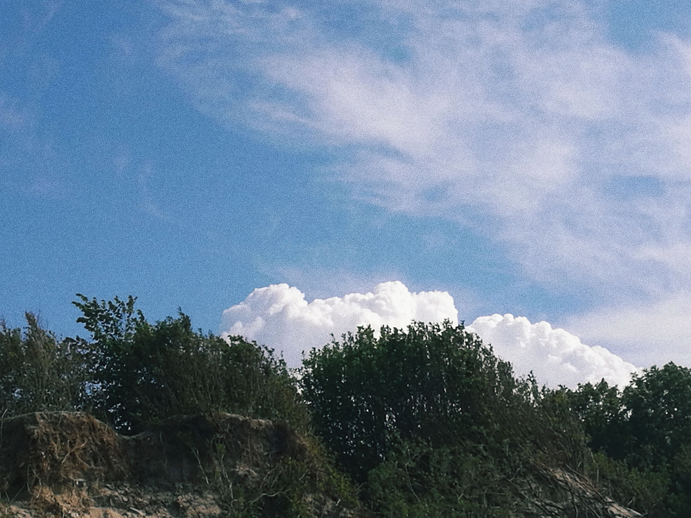

я снимаю на камеру телефона.
если что-то, что меня окружает выражает эмоцию,
статичную или динамичную, фотографирую
если я вижу акцент
в композиции и линиях — заставляю цвет замолчать,
если он может сказать что-то важное, прислушиваюсь
нажми на цветное или черно-белое фото чтобы увидеть примеры моих снимков